전자상거래운용사 (2021-06-19 기출문제)
1과목: 인터넷 일반
1. 다음 글상자에서 설명하고 있는 용어로 가장 올바른 것은?
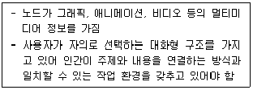
- 하이퍼 링크
- 하이퍼 미디어
- 하이퍼 텍스트
- 미디어 파사드
(정답률: 54%)

2. 다음 글상자의 괄호 안에 들어갈 용어로 가장 올바른 것은?
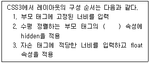
- onetrue
- overflow
- margin
- position
(정답률: 44%)
3. 다음 글상자의 괄호 안에 들어갈 용어로 가장 올바른 것은?
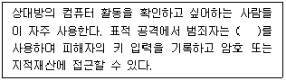
- 애드웨어
- 웹로그
- 하드웨어 키 로거
- 스파이웨어
(정답률: 47%)
4. 다음 중 자바스크립트의 논리연산자 “||”의 계산으로 가장 올바른 것은?
- 논리합을 실행한다.
- 반복을 실행한다.
- 부정을 의미한다.
- 논리곱을 실행한다.
(정답률: 38%)
5. 다음 중 HTML의 공통적인 특징에 대한 설명으로 가장 올바르지 않은 것은?
- 태그는 대소문자를 구분한다.
- 모든 태그는 '< >'로 구성된다.
- 태그는 일반적으로 '<tag>, </tag>'처럼 시작태그와 종료태그를 짝을 이루어 사용되지만 단독으로 사용되는 태그도 있다.
- 주석을 삽입할 때는 '<!--주석내용-->'과 같은 형식으로 사용된다.
(정답률: 43%)
6. 다음 중 레이아웃을 위해 HTML5에 추가된 요소로 가장 올바르지 않은 것은?
- header
- aside
- hgroup
- ul
(정답률: 42%)
7. 다음 중 상업용 웹사이트의 디자인 관점에 대한 설명으로 가장 올바르지 않은 것은?
- 콘텐츠 : 사이트에 담긴 정보는 사이트와 관련되어 있어야 한다.
- 가시성 : 사이트는 주요 검색 엔진과 광고 매체를 통해 쉽게 찾을 수 있어야 한다.
- 이용성 : 사이트는 사용자와 친숙해야 하며, 인터페이스와 탐색이 복잡하고 전문성이 있어야 한다.
- 겉모습 : 그래픽과 텍스트는 일정하게 보여 주는 흐름식의 단일 스타일을 포함해야 한다. 스타일은 전문적이고, 관심을 끌 수 있어야 하며, 타당성이 있어야 한다.
(정답률: 40%)
8. 다음 중 인터넷 중독의 유형으로 가장 올바르지 않은 것은?
- 높은 자기 존중감
- 강박적 집착과 사용
- 현실구분 장애
- 일상생활 장애
(정답률: 53%)
9. 다음 중 웹 콘텐츠 접근성 지침으로 가장 올바르지 않은 것은?
- 텍스트 콘텐츠를 판독하고 이해할 수 있도록 만들어야 한다.
- 사용자가 탐색하고, 콘텐츠를 찾고 그들이 어디에 위치하고 있는지를 알 수 있도록 도와주는 방법을 제공해야 한다.
- 읽기 및 콘텐츠를 사용하는 사용자에게 충분한 시간을 제공해야 한다.
- 정보와 구조의 손실 없이 콘텐츠를 더욱 복잡한 형태로 표현할 수 있어야 한다.
(정답률: 45%)
10. 다음 중 네티켓의 기본 정신으로 가장 올바르지 않은 것은?
- 사이버 공간의 주체는 인간이다.
- 사이버 공간은 누구에게나 평등하며 열린 공간이다.
- 사이버 공간은 공동체의 공간보다 개인의 공간이 우선이다.
- 사이버 공간은 네티즌 스스로 건전하게 가꾸어 나간다.
(정답률: 50%)
11. 다음 중 e-메일 프로토콜에 대한 설명으로 가장 올바른 것은?
- SMTP: 인터넷 상에서 메일을 전송할 때 사용하는 표준프로토콜이다.
- POP3: 메일에서 메시지의 헤더(Header) 부분만 먼저 사용자의 컴퓨터로 수신해 오고, 읽고 싶은 메일의 본문(Body)을 나중에 별도로 수신해 오는 기능을 지원하는 프로토콜이다.
- MIME: 메일을 수신할 때 사용하는 프로토콜로 110번 Port를 사용한다. 기본적으로 수신된 메일은 메일서버에서 삭제된다. 선택적으로 메일을 가져올 수 없다.
- IMAP: 메일을 보내기 위한 표준 포맷이다.
(정답률: 25%)
12. 다음 중 자바스크립트의 역할로 가장 올바르지 않은 것은?
- 폼의 유효성 검증
- 개발자와의 상호작용
- CSS 및 HTML 요소의 스타일 변경
- 웹 브라우저 제어 및 쿠키 등의 설정과 조회
(정답률: 30%)
13. 다음 글상자에서 설명하고 있는 용어로 가장 올바른 것은?
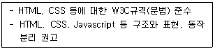
- 웹 호환성
- 웹 접근성
- 웹 표준
- 웹 콘텐츠
(정답률: 39%)
14. 다음 글상자에서 설명하고 있는 용어로 가장 올바른 것은?
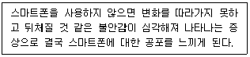
- 스마트폰 포비아
- 스마트폰 활용
- 스마트폰 소외족
- 안티 스마트폰
(정답률: 50%)
15. 다음 중 HTML5의 특징으로 가장 올바르지 않은 것은?
- CSS3 지원
- 구조적 설계 지원
- 모바일 웹 지원
- 모든 API 제공
(정답률: 39%)
16. 다음 글상자의 괄호 안에 들어갈 용어로 가장 올바른 것은?
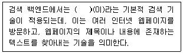
- 인덱스
- 딥러닝
- 크롤링
- 웹서칭
(정답률: 31%)
17. 다음 글상자에서 설명하고 있는 개인정보 2차 침해유형으로 가장 올바른 것은?
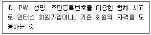
- 위조 및 변조
- 명의 도용
- 스팸 및 피싱
- 금전적 이익 수취
(정답률: 46%)
18. 다음 글상자에서 설명하고 있는 용어로 가장 올바른 것은?
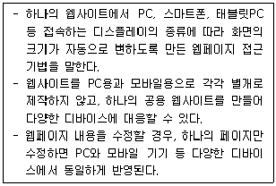
- 적응형 웹 디자인
- 반응형 웹 디자인
- 정적 웹 디자인
- 동적 웹 디자인
(정답률: 44%)
19. 다음 글상자에서 설명하고 있는 기술로 가장 올바른 것은?
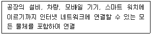
- 블루투스
- 클라우드
- 사물인터넷
- 무선네트워크
(정답률: 40%)
20. 다음 글상자에서 설명하고 있는 용어로 가장 올바른 것은?
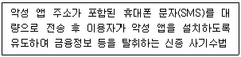
- 피싱
- 파밍
- 스미싱
- 비싱
(정답률: 44%)
2과목: 전자상거래 일반
21. 다음 중 플랫폼 비즈니스의 특징으로 가장 올바르지 않은 것은?
- 플랫폼을 이용한 상거래 방식으로 다양한 분야의 정보를 공급하거나 가상 또는 현실을 연결하는 비즈니스 모델
- 2개 이상의 서로 다른 집단 사이의 직접적인 상호작용을 촉진함으로써 새로운 가치를 창출하는 사업
- 다수의 생산자와 소비자가 연결되어 상호작용하며 가치를 창출하는 기업과 산업 생태계 기반의 장
- 한 기업이 가치 창출의 처음부터 끝까지 폐쇄적으로 통제하는 비즈니스
(정답률: 53%)
22. 다음 중 잠재 고객인 과거의 고객을 대상으로 수행되는 고객관계관리 전략으로 가장 올바른 것은?
- 재활성화 전략
- 고객 유지 전략
- 교차 판매 전략
- 고객 세분화 전략
(정답률: 35%)
23. 다음 중 온라인 소비자의 세분화 기준과 관련된 변수에 대한 내용으로 가장 올바르지 않은 것은?
- 인구통계학적 변수: 나이, 성별, 직업, 소득
- 심리분석적 변수: 사회계층, 라이프 스타일, 개성, 태도
- 구매 행동 변수: 사용 기회, 사용 경험, 사용량
- 기술 분석적 변수: 기술에 대한 수용 태도, 기술 사용정도, 상표 애호도
(정답률: 40%)
24. 다음 중 온라인 쇼핑몰의 상품 판매 프로세스로 가장 올바른 것은?
- 상품등록 → 주문접수 → 상품발송 → 배송완료 → 구매확정 → 판매대금정산
- 주문접수 → 상품등록 → 상품발송 → 배송완료 → 구매확정 → 판매대금정산
- 상품등록 → 주문접수 → 상품발송 → 구매확정 → 배송완료 → 판매대금정산
- 주문접수 → 상품등록 → 상품발송 → 구매확정 → 배송완료 → 판매대금정산
(정답률: 53%)
25. 다음 글상자에서 설명하는 용어로 가장 올바른 것은?
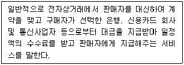
- 전자지불 게이트웨이
- 개방형 전자지불
- 폐쇄형 전자지불
- 네트워크형 전자지불
(정답률: 47%)
26. 다음 글상자에서 설명하고 있는 물류의 유형으로 가장 올바른 것은?
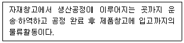
- 반품물류
- 생산물류
- 판매물류
- 조달물류
(정답률: 45%)
27. 다음 중 전자상거래 프로세스 절차로 가장 올바른 것은?
- 사이트 접속 → 상품 검색 → 상품 선택 → 결제 → 물류(배송) → 고객 서비스
- 사이트 접속 → 상품 검색 → 상품 선택 → 물류(배송) → 결제 → 고객 서비스
- 고객 서비스 → 사이트 접속 → 상품 검색 → 상품선택 → 결제 → 물류(배송)
- 고객 서비스 → 사이트 접속 → 상품 검색 → 상품선택 → 물류(배송) → 결제
(정답률: 52%)
28. 다음 글상자에서 설명하고 있는 가격 결정 방식으로 가장 올바른 것은?
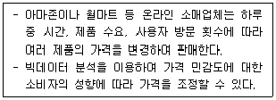
- 동적 가격 결정
- 가치 기준 가격 결정
- 경쟁 기반 가격 결정
- 비용 기준 가격 결정
(정답률: 42%)
29. 다음 글상자에서 설명하고 있는 용어로 가장 올바른 것은?
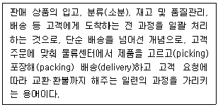
- 크리시튜니티(crisitunity)
- 라스트마일 서비스(lastmile service)
- 풀필먼트(fulfillment)
- 커스터마이제이션(customization)
(정답률: 47%)
30. 다음 중 모바일 마케팅의 특징으로 가장 올바르지 않은 것은?
- 이동성
- 개인화
- 적시성
- 고착화
(정답률: 47%)
31. 다음 글상자에서 설명하고 있는 용어로 가장 올바른 것은?
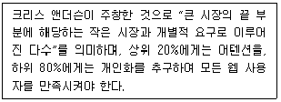
- 파레토
- 롱테일
- 크라우드소싱
- 온라인 벼룩시장
(정답률: 28%)
32. 전자상거래와 e-비즈니스에 대한 설명으로 가장 올바른 것은?
- 전자상거래와 e-비즈니스는 서로 같은 의미이다.
- 전자상거래는 e-비즈니스를 포괄하는 개념이다.
- e-비즈니스는 전자상거래를 포괄하는 개념이다.
- 전자상거래와 e-비즈니스는 전혀 관련이 없다.
(정답률: 46%)
33. 다음 글상자에서 설명하고 있는 용어로 가장 올바른 것은?
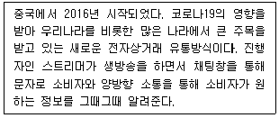
- 소셜 커머스
- 라이브 커머스
- 스마트 비즈니스
- 큐레이션 비즈니스
(정답률: 52%)
34. 전자상거래 비즈니스 모델의 유형을 소매 모델, 중개 모델, 콘텐츠 서비스 모델, 커뮤니티 모델로 구분할 수 있다. 다음 중 중개 모델의 유형으로 가장 올바르지 않은 것은?
- 경매 중개
- 거래 중개
- e-마켓플레이스
- 협력 플랫폼
(정답률: 34%)
35. 다음 중 전자상거래와 관련된 법칙이나 정리에 대한 설명으로 가장 올바르지 않은 것은?
- 메트칼프의 법칙에 따르면, 네트워크의 가치는 사용자수의 제곱에 비례한다.
- 길더의 법칙에 따르면, 광섬유를 통한 디지털 데이터 전송속도는 12개월마다 3배로 증가한다.
- 무어의 법칙에 따르면, 반도체 칩의 성능은 18개월마다 2배로 증가한다.
- 코즈의 정리에 따르면, 거래비용이 획기적으로 증가한다면 효율적인 자원 배분이 가능하다.
(정답률: 35%)
36. 오스터왈더와 피그누어는 비즈니스 모델을 하나의 조직이 어떻게 가치를 창조하고, 전달하며, 포착하는지를 논리적으로 설명한 것이라고 정의하였다. 다음 중 가치의 창조와 관련된 활동으로 가장 올바르지 않은 것은?
- 핵심 고객 세그먼트
- 핵심 활동
- 핵심 자원
- 핵심 파트너십
(정답률: 33%)
37. 다음 중 데이터베이스 마케팅에서 RFM 분석에 속하지 않는 것은?
- 구매 빈도 : 일정기간 동안 얼마나 자주 자사의 제품이나 서비스를 구매했는가?
- 구매 최근성 : 얼마나 최근에 자사의 제품이나 서비스를 구매했는가?
- 구매 금액 : 일정기간 동안 얼마나 많은 자사의 제품이나 서비스를 구매했는가?
- 구매 방식 : 일정기간 동안 특정 채널로 자사의 제품이나 서비스를 구매했는가?
(정답률: 38%)
38. 다음 중 판매 전 e-CRM 영역에서 수행되는 활동으로 가장 올바르지 않은 것은?
- 서비스 개발 과정 및 라이프 사이클 결정에 인터넷을 통한 고객 참여
- 서비스 문제를 고객이 처리할 수 있도록 문제 해결 매뉴얼 제공
- 서비스 가격 결정에서 인터넷을 통한 유사 서비스 가격정보의 획득
- 시장세분화를 위한 고객 정보 확보를 목적으로 인터넷상에서 시장 조사
(정답률: 48%)
39. 다음 글상자에서 설명하는 마케팅 서비스로 가장 올바른 것은?
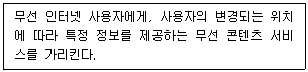
- 이동 기반 서비스
- 무선 기반 서비스
- 위치 기반 서비스
- 정보 기반 서비스
(정답률: 48%)
40. 비즈니스 모델의 핵심 요소는 가치명제, 제품 및 서비스, 자원시스템, 수익모델로 구성된다. 다음 중 회사의 성공가능성을 가늠하기 위해 가장 중요한 잣대로 사용되는 요소로 가장 올바른 것은?
- 제품 및 서비스
- 자원시스템
- 수익모델
- 가치명제
(정답률: 35%)
3과목: 컴퓨터 및 통신 일반
41. 데이터는 형식과 구조의 저장 형태에 따라 정형, 반정형, 비정형 데이터로 구분할 수 있다. 다음 중 반정형 데이터로 가장 올바르지 않은 것은?
- 파일에 데이터 구조 정보가 존재한다.
- JSON, XML과 같은 형태가 이에 속한다.
- 손쉽게 데이터에 대한 부분의 검색 선택, 갱신, 삭제 등의 연산을 수행할 수 있다.
- 데이터의 순서 및 배열 등으로 이루어진 로그 데이터, 센싱 데이터 등은 형식과 구조의 저장형태에 따라 반정형 데이터 형태로 처리할 수도 있다.
(정답률: 29%)
42. 다음 중 근거리 무선 통신의 예로 가장 올바르지 않은 것은?
- RFID
- Bluetooth
- QR Code
- WiFi
(정답률: 30%)
43. 다음 중 운영체제의 운영 방식과 이에 대한 설명으로 가장 올바르지 않은 것은?
- 시분할 시스템 : 각 작업 요청에 대해 시간적 제약을 두고 처리하는 시스템
- 분산 처리 시스템 : 여러 개의 처리 기기들이 서로 통신을 하여 동시에 작업을 처리하는 시스템
- 병렬 처리 시스템 : 여러 개의 작업을 하나의 시스템에서 동시에 처리하는 시스템
- 일괄 처리 시스템 : 여러 개의 작업을 한 번에 순차처리하는 시스템
(정답률: 23%)
44. 다음 글상자에서 설명하고 있는 사이버 공격 유형으로 가장 올바른 것은?
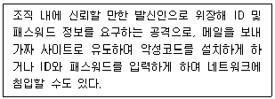
- 디버깅(Debugging)
- 웨일링(Whaling)
- 스피어 피싱(Spear phishing)
- 파밍(Pharming)
(정답률: 31%)
45. 다음 중 전자서명에 대한 설명으로 가장 올바르지 않은 것은?
- 서명문의 서명자를 인증할 수 있다.
- 서명문을 다른 문서에서 재사용할 수 있다.
- 서명된 문서는 데이터가 변조되지 않았음을 보장한다.
- 서명자가 나중에 서명한 사실을 부인할 수 없다.
(정답률: 29%)
46. 다음 중 프로토콜에 대한 설명으로 가장 올바른 것은?
- 네트워크 통신에 필요한 하드웨어의 표준 규격 정의이다.
- 컴퓨터 간에 정보를 주고 받을 때 통신 규칙과 방법에 대한 규약이다.
- 사람과 컴퓨터 간에 정보를 표현할 때 사용하는 인터페이스이다.
- 통신 매체에서 사용하는 전기 신호의 규격이다.
(정답률: 17%)
47. 다음 중 웜바이러스 피해에 대한 대응 요령으로 가장 올바르지 않은 것은?
- 피해 시스템의 네트워크 케이블을 분리하여 해당 호스트를 네트워크에서 격리한다.
- 백신 점검을 통해 악성코드를 검출하고 백신 치료를 실시한다.
- 루트 혹은 관리자 계정의 비밀번호만 교체한다.
- 감염 이전의 백업 기록으로 피해 시스템을 복구한다.
(정답률: 35%)
48. 다음 중 클라우드 컴퓨팅 서비스의 특성에 대한 설명으로 가장 올바르지 않은 것은?
- 인터넷 환경에서는 필요할 때 즉시 사용이 가능하다.
- 사용한 만큼의 비용을 지불하는 것이 가능하다.
- 자원을 할당받으면 운영체제를 직접 설치해야한다.
- 자원을 늘리고 줄이는 것이 자유롭다.
(정답률: 28%)
49. 다음 중 암호 기술과 실제로 적용된 사례의 연결이 가장 올바르지 않은 것은?
- 대칭 키 암호 알고리즘 - 공인인증서
- 공개 키 암호 알고리즘 – TLS
- 해시 함수 - 파일 무결성 검증
- 의사난수 생성 알고리즘 - OTP
(정답률: 27%)
50. 다음 중 랜섬웨어와 일반 악성코드를 비교한 내용으로 가장 올바르지 않은 것은?
- 랜섬웨어와 일반 악성코드의 감염되는 취약점은 크게 다르지 않다.
- 랜섬웨어는 일반 악성코드와 다르게 감염시 데이터를 암호화한다.
- 랜섬웨어는 치료가 가능하지만 일반 악성코드는 치료를 하더라도 암호화 된 자료를 복구할 수 없다.
- 랜섬웨어와 일반 악성코드 모두 유포 방식이 유사하다.
(정답률: 37%)
51. 다음 중 랜섬웨어 피해를 줄이기 위한 조치로 가장 올바르지 않은 것은?
- 소프트웨어를 모두 최신의 상태로 유지한다.
- 백신 소프트웨어의 실시간 감시를 사용한다.
- 웹 백업 서비스나 사내 백업 시스템을 사용한다.
- 가급적 공유 폴더 시스템으로 자료를 주고 받는다.
(정답률: 35%)
52. 다음 중 서버, 스토리지, 소프트웨어 등 ICT 자원을 탄력적으로 사용할 수 있는 컴퓨팅 환경인 클라우드 컴퓨팅의 운용 형태에 따른 사용 사례로 가장 올바르지 않은 것은?
- 퍼블릭 클라우드 : 불특정 다수에게 서비스를 제공할 때 사용된다.
- 퍼블릭 클라우드 : 공공기관이나 사내 서비스 환경으로 사용하기에 적합하다.
- 프라이빗 클라우드 : 컴퓨팅 자원 사용량이 일정한 경우에 사용하기 적합하다.
- 하이브리드 클라우드 : 금융기관에서도 사용하기 적합하다.
(정답률: 25%)
53. 다음 중 하나의 물리적 네트워크가 마치 여러 개의 다른 기종 프로토콜이 운영되는 논리적 오버레이 네트워크로 운용되는 네트워크 가상화로 가장 올바르지 않은 것은?
- 호스트 가상화
- 링크 가상화
- 라우터 가상화
- 스토리지 가상화
(정답률: 23%)
54. 다음 중 인터넷의 다양한 주소 체계와 이에 대한 설명이 가장 올바르지 않은 것은?
- IPv4 주소 - 32비트로 이루어진 주소 체계로 약 40억개의 서로 다른 주소를 부여할 수 있다.
- IPv6 주소 - IPv4 주소의 부족 현상을 해결할 뿐만 아니라 네트워크 속도의 증가, 높은 품질의 서비스 제공 등 IPv4에 비해 많은 장점을 가지고 있다.
- MAC - 이더넷의 물리적인 주소로 세계에서 유일한 번호이다.
- 도메인 이름 - IP 주소를 단어나 문자로 표현한 것으로, 한 번 IP와 연결되면 변경할 수 없다.
(정답률: 15%)
55. 다음 중 서비스 거부 공격에 대한 대응 방안으로 가장 올바르지 않은 것은?
- 서버의 접속 로그를 확인하여 비정상 접속 증가 여부를 확인한다.
- 접속 패킷의 프로토콜 정보와 HTTP 헤더 정보, 연결정보를 확인한다.
- 서버로 접속되는 방화벽의 포트를 모두 차단한다.
- 접속 임계치를 설정해 비정상 접속 트래픽을 차단한다.
(정답률: 26%)
56. 다음 중 OTP(One Time Password)에 대한 설명으로 가장 올바르지 않은 것은?
- 매번 비밀번호가 바뀌므로 OTP를 항상 소지해야한다.
- 재사용이 불가능한 비밀번호로 노출이 되더라도 안전하다.
- 기존 암호 방식에 비해 비밀번호가 비교적 짧아 위험하다.
- 전자금융 거래 시 보안 카드를 대체할 수 있다.
(정답률: 28%)
57. 다음 중 온라인 서비스 환경을 구축하는 웹 호스팅의 개념에 대한 설명으로 가장 올바르지 않은 것은?
- 웹 서비스를 제공할 수 있는 서버를 임대해준다.
- 외부 인터넷과 연결을 웹 호스팅 업체에서 관리한다.
- 임대받은 서버에 가입자가 직접 운영체제 설치와 홈페이지 구축을 해야한다.
- 개인이 직접 시설을 설치해 운영하는 것보다 저렴하다.
(정답률: 31%)
58. 다음 중 기업에서 재택근무를 시행할 때의 행동으로 가장 올바른 것은?
- 원격 근무 시스템을 사용할 땐 안정적인 접속을 위해 방화벽을 끄고 사용한다.
- VPN을 사용하면 비교적 안전하므로 연결 상태를 유지한다.
- 가급적 개인 PC를 사용하여 업무용 PC를 안전하게 보호한다.
- 가급적 회사 메일을 사용하며 계정에 다중 인증을 사용한다.
(정답률: 22%)
59. 다음 중 기기와 설치된 운영체제의 예로 가장 올바르지 않은 것은?
- 스마트폰의 안드로이드(Android)
- 서버의 우분투(Ubuntu)
- 저사양 컴퓨터의 프리도스(FreeDOS)
- 노트북의 바이오스(BIOS)
(정답률: 27%)
60. 다음 중 망 분리에 대한 설명으로 가장 올바르지 않은 것은?
- 업무에 쓸 내부망과 인터넷 접속에 쓸 외부망을 따로 관리하는 체계
- 망을 분리하면 추가적인 보안 솔루션이 없어도 안전
- 물리적 망 분리는 논리적 망 분리보다 장비가 더 필요
- 논리적 망 분리는 하나의 PC로 내부망과 외부망 작업이 가능
(정답률: 24%)